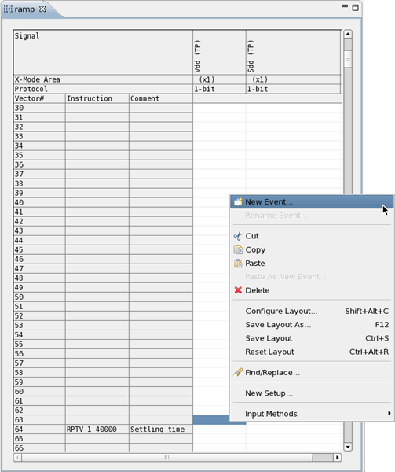
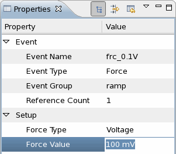
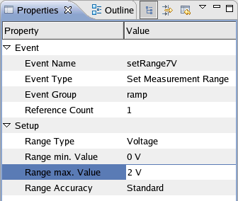
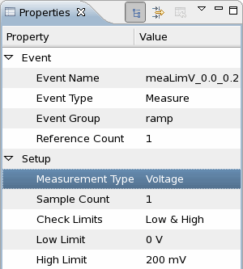
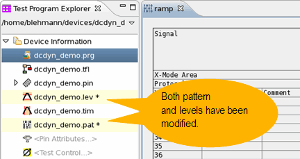

Defining events and test points for a dynamic DC test
In this step you define the events and test points representing the voltage force and voltage measure waveforms in the "ramp" pattern in the Pattern Editor.
Before you begin
The pattern setup is specified in the table in Creating a pattern for a dynamic DC test. You may want to copy or print the table.

Procedures
First force event
To create the first force event:
- In the pattern editor, go to row 63, right-click in the Vdd (TP) column, and select New Event.
- In the New Event dialog specify the first force event.
Event Name: frc_0.1V
Event Type: Force
- In the Properties view, in the Force Value input field, type the voltage level:
100 mV

Measurement range event
To create the event and test point setting the measurement range:
- In the pattern editor, go to row 63, right-click in the Sdd (TP) column, and select New Event.
- In the New Event dialog specify the event name and type.
Event Name: setRange7V
Event Type: Set Measurement Range
When done, click Finish.
In the Properties view, set the Range Type to Voltage.
In the Range min./max. Value input fields, type the min./max. voltage levels: 0 V and 2 V.

First measure event
To specify the corresponding first measure event:
- Go to row 200, right-click in the Sdd (TP) column, select New Event,
and specify the following parameters:
Event Name: meaLimV_0.0_0.2
Event Type: Measure
- In the Properties view, type the voltage values for Low Limit and High Limit: 0
V and 200 mV
In this example setup the limit values of the measure event are always 0.1 V above and below the corresponding force voltage level.

- Continue creating the events and test points as specified in the table in Creating a pattern for a dynamic DC test.
Modified pattern and level file
The previous steps modified both the pattern file and the level file (indicated by an asterisk).
Save both files.

Results
You defined the force and measure events and their corresponding test points for the dynamic DC test example.
Pattern file
In the resulting pattern file, the TPSE firmware commands configure the test point sequences for the power pin (Vdd) and signal pin (Sdd):
TPSE "ramp",MAIN,"ramp",REPLACE,(Vdd),#3xxx<?xml version="1.0"?>
<sequence>
<tp anchor="63" td="frc_0.1V"/>
<tp anchor="300" td="frc_0.5V"/>
<tp anchor="500" td="frc_0.9V"/>
<tp anchor="700" td="frc_1.3V"/>
<tp anchor="900" td="frc_1.5V"/>
</sequence>
TPSE "ramp",MAIN,"ramp",REPLACE,(Sdd),#3xxx<?xml version="1.0"?>
<sequence>
<tp anchor="63" td="setRange7V"/>
<tp anchor="200" td="meaLimV_0.0_0.2"/>
<tp anchor="400" td="meaLimV_0.4_0.6"/>
<tp anchor="600" td="meaLimV_0.8_1.0"/>
<tp anchor="800" td="meaLimV_1.2_1.4"/>
<tp anchor="1000" td="meaLimV_1.4_1.6"/>
</sequence>Level file
In the resulting level file, the DFTD firmware commands configure the events for setting the voltage levels for the power pin (Vdd) and signal pin (Sdd):
DFTD "ramp",REPLACE,(Vdd),#9000000494<?xml version="1.0"?>
<testdata>
<td id="frc_0.1V" type="dcset">
<setForceValue type="voltage" value="0.1"/>
</td>
<td id="frc_0.5V" type="dcset">
<setForceValue type="voltage" value="0.5"/>
</td>
<td id="frc_0.9V" type="dcset">
<setForceValue type="voltage" value="0.9"/>
</td>
<td id="frc_1.3V" type="dcset">
<setForceValue type="voltage" value="1.3"/>
</td>
<td id="frc_1.5V" type="dcset">
<setForceValue type="voltage" value="1.5"/>
</td>
</testdata>
DFTD "ramp",REPLACE,(Sdd),#9000000701<?xml version="1.0"?>
<testdata>
<td id="setRange7V" type="dcset">
<setMeasureRange type="voltage" minValue="0" maxValue="2"/>
</td>
<td id="meaLimV_0.0_0.2" type="dcset">
<measure type="voltage" limitLow="0.15" limitHigh="0.2"/>
</td>
<td id="meaLimV_0.4_0.6" type="dcset">
<measure type="voltage" limitLow="0.4" limitHigh="0.6"/>
</td>
<td id="meaLimV_0.8_1.0" type="dcset">
<measure type="voltage" limitLow="0.8" limitHigh="1"/>
</td>
<td id="meaLimV_1.2_1.4" type="dcset">
<measure type="voltage" limitLow="1.2" limitHigh="1.4"/>
</td>
<td id="meaLimV_1.4_1.6" type="dcset">
<measure type="voltage" limitLow="1.4" limitHigh="1.6"/>
</td>
</testdata>What to do next
Next you must set up a test method which executes a functional test and uploads the results.
Functional changes
- Introduced in SmarTest 6.5.2